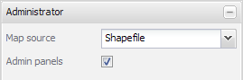
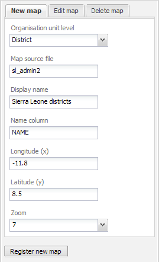

Table of Contents
The DHIS2 mapping client relies on GeoJSON files in order to display a map in the browser window. Often times, geographical data is received in many different formats, but the ESRI shape file format is one of the most common. Several procedures will be described below. It is important, but not required, that the names in your geographical data match those in the DHIS2 organizational hierachy. If they do not, you will need to manually match them in a later step
Geoserver is capable of outputting GeoJSON formats. If you have geoserver running someplace, you can execute the following query.
http://localhost:8080/geoserver/wfs?request=GetFeature&typename=who:zm_adm1&outputformat=json
You will need to adjust the host destination if the machine is not your local machine as well as defining the actual layer in Geoserver which should be output to GeoJSON (in this case who:zm_adm1).
Geoserver will produce a GeoJSON file, and you will be asked to save it. Once it has finished downloading, rename the file following the suggested naming convention:
ISO2CountryCode followed by an underscore, followed by the layer type (e.g. “admin” for administrative layers, “health” for health administrative boundaries)
GDAL is a multi-platform toolkit for the manipulation of geographical data. It is freely available for a wide-range of platforms at http://gdal.org/.
Production of GeoJSON files are straightforward with GDAL. Just exectue
ogr2ogr.exe -f "GeoJSON" dst_datasource_name src_datasource_name (Windows) or ogr2ogr -f "GeoJSON"dst_datasource_name src_datasource_name (Linux)
Replace dst_datasource_name with the path to the destination geographical data file (following the naming convention described above and src_datasource_name with the source geographical data file.

- Map source
Shapefile: you will find your own registered maps in the Map combo box in the Thematic map panel. The Admin panels check box will become visibile.
DHIS Database: the Map combo box will simply be populated by the existing organisation unit levels and shapefiles will be created by the application on the fly. Organisation units must have coordinates stored in the datasbase in order to be displayed in the map. This function is mainly intended for the facility level as it is easy to maintain and thus will offer up-to-date shapefiles.
- Admin panel
Show/hide the shapefile management panels.
In order to view data in the GIS module, you must import your geographical data into your DHIS installation. Once you have produced GeoJSON files according to the procedure above, and imported them into the system, you will need to establish a correspondnce between the information in the DHIS database, and the GeoJSON file.

- Organisation unit level
The level of the organization units displayed in the GeoJSON file.
- Map source file
The GeoJSON file name. These files must be placed in the mapping/geojson folder. Use e.g. Geoserver 2.0 (currently RC1) to easily produce GeoJSON from your shapefiles.
- Display name
Represents your map in the Map combo boxe in the Thematic map panel.
- Name column
The shapefile data column (case sensitive!) that will be matched against DHIS organisation unit names. There are several ways to get it, eg. Geoserver: